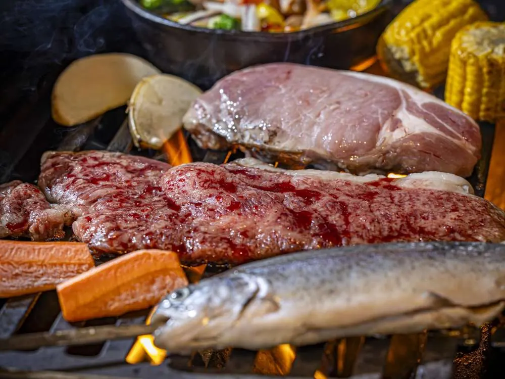
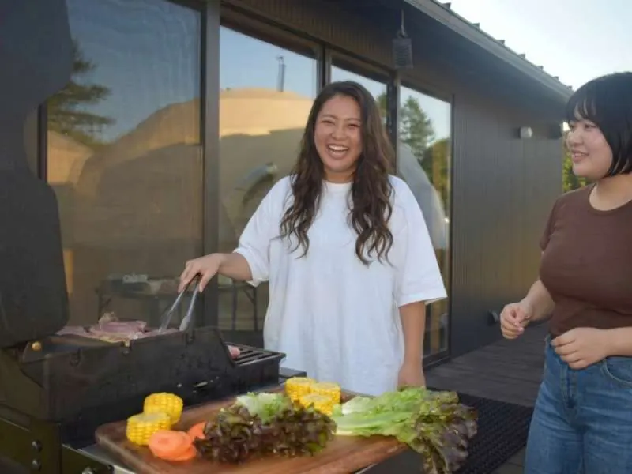
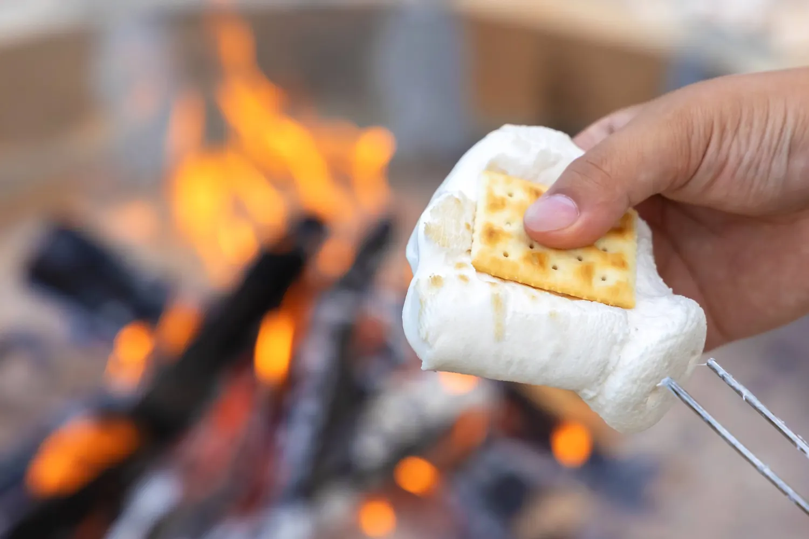
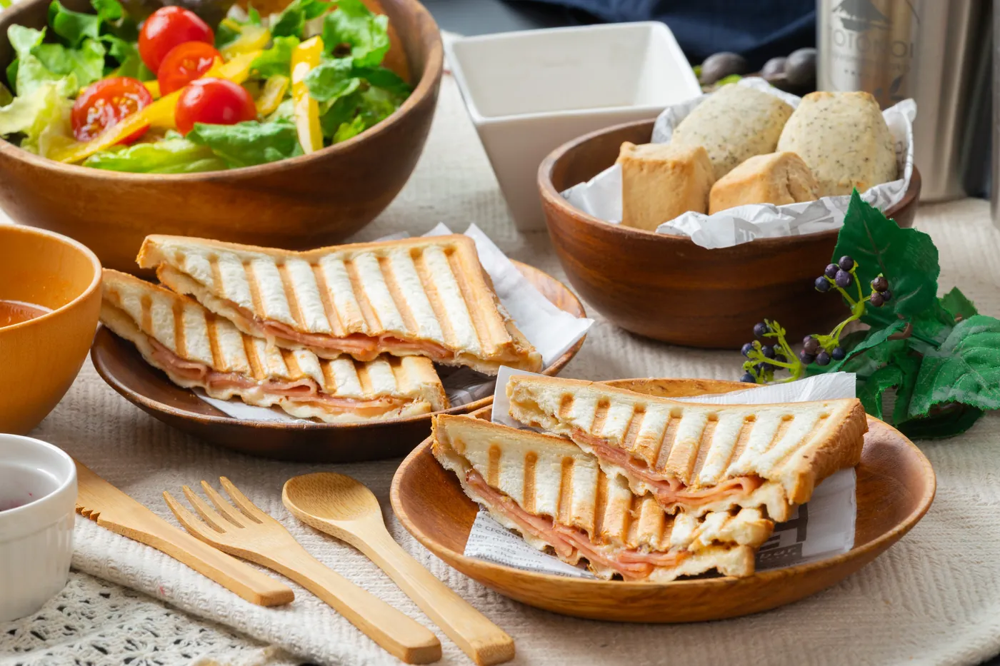
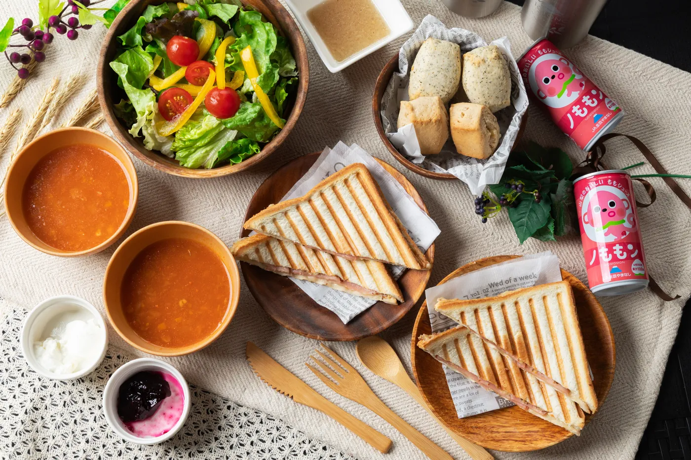

山梨縣產牛・甲州牛 & 富士櫻豬
以山梨縣代表性肉品打造主菜，享受豪華露營特有的現烤樂趣。
山梨除了水果與葡萄酒，也有富士山湧水孕育的食材。TOTONOI 的豪華露營 BBQ 以當地牛肉、虹鱒魚、富士櫻豬與季節蔬菜為主角。
以山梨縣代表性肉品打造主菜，享受豪華露營特有的現烤樂趣。
以富士山湧水養殖的虹鱒魚，搭配當地時令蔬菜與其他料理。
正式菜單亦包含山梨縣產馬刺身、海鮮橄欖油蒜香料理等內容。
TOTONOI Morning 包含現烤三明治、沙拉、湯品及山梨 100% 水蜜桃果汁等。
※菜單內容可能因季節及供應情況變更。實際內容請以預約時最新方案為準。



早上在富士山周邊享用簡單而有旅行感的早餐。現烤三明治、沙拉、湯品等，為山中湖的一天慢慢開始。



※早餐內容可能因季節及供應情況變更。
預訂指定「一泊兩餐」住宿方案時輸入優惠碼即可享 5% OFF。
※純住宿／素泊まり方案不適用。